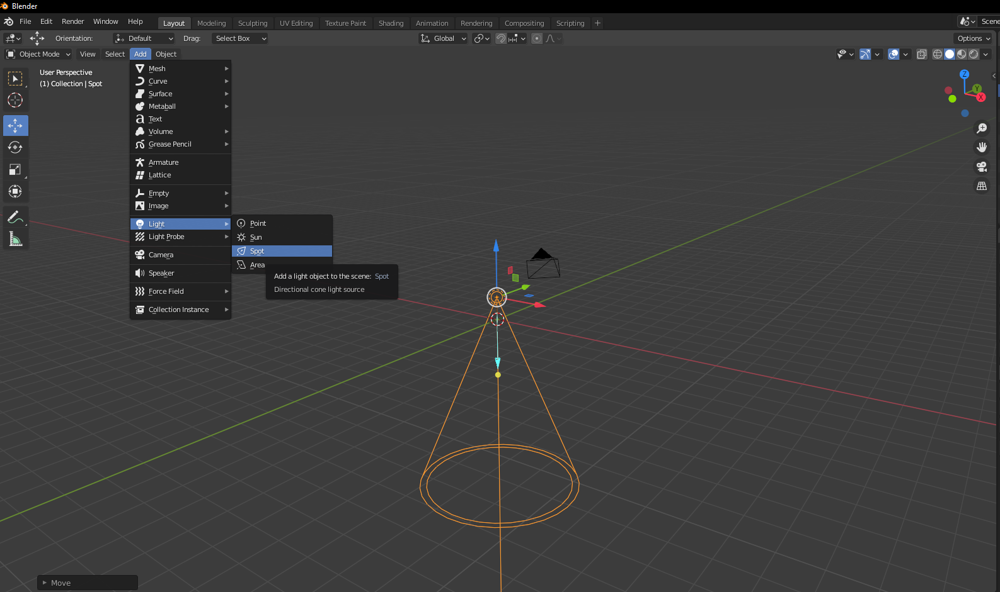
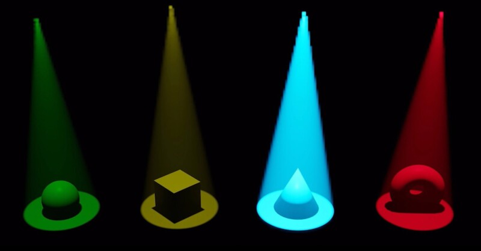
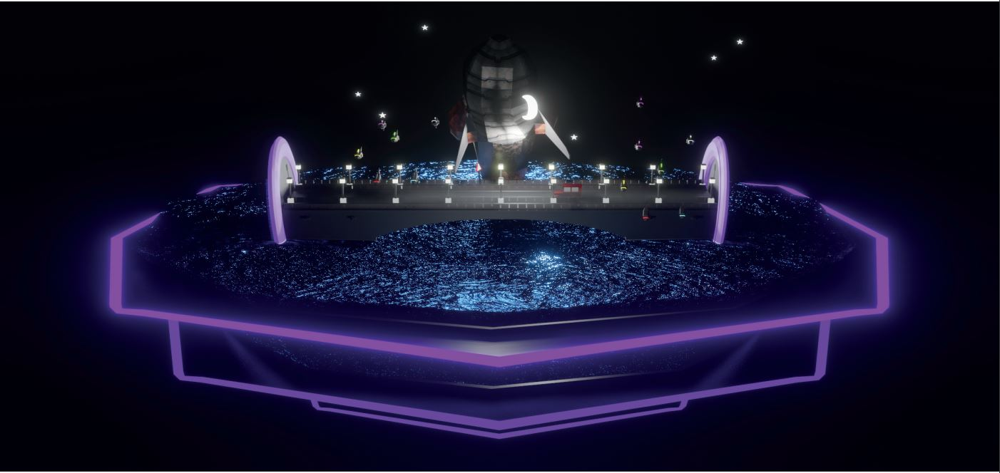
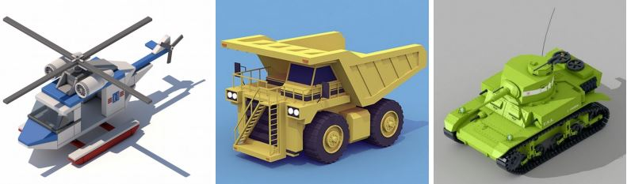

Il·luminacions d'estudi Les il·luminacions d'estudi s'utilitzen per il·luminar la vista 3D durant vista sòlida i no es renderitzaran. A diferència dels llums de l'escena, la direcció de la il·luminació segueix l'orientació de la vista. Editor Hi ha fins a quatre fonts de llum virtuals. Els alternadors d'il·luminació us permeten habilitar o desactivar llums individuals. Almenys una de les quatre llums ha de romandre habilitada per a la Vista 3D. Els llums són iguals, excepte per la direcció i el color. Podeu controlar la direcció de les llums, així com els seus colors difusos i especulars. Llum Usar Llum Alterna la llum específica. Difusió Aquest és el color constant de la llum. Especularitat Aquest és el color de realç de la llum. Suavitzat Suavitza l'ombreig d'aquesta llum. Això té lefecte que la il·luminació sigui menys directa. Direcció La direcció de la llum, (vegeu Botons de Direcció). La direcció de la llum serà la mateixa que es mostra a la superfície de l'esfera. Color Ambiental El color de les àrees no il·luminades. MatCaps Aquest panell administra els fitxers d'imatge MatCap que es poden utilitzar per il·luminar la vista quan l'ombrejat MatCap està habilitat. S'admeten dos tipus d'imatges per a MatCaps. Fitxers d'imatge regulars i fitxers OpenEXR multicapa. Quan s'utilitzen fitxers OpenEXR multicapa, la capa anomenada «difusa» s'utilitzarà com a passada difusa, la capa anomenada «especular» s'utilitzarà com a passada especular. Les imatges normals es tractaran com a «difuses» i no admetran el ressaltat especular. El passi difús es multiplica pel color base dels objectes ia sobre se suma el passi especular. Els MatCaps, que només tenen una passada difusa, tendeixen a veure's molt metàl·lics, amb una passada especular separada és possible simular una varietat més àmplia de materials. HDRI Aquest panell administra els fitxers d'imatge HDRI que es poden utilitzar per il·luminar la vista quan l'ombrejat Previsualització de Material o Renderitzat està habilitat.
 L'objectiu d'aquest projecte consisteix en modelar una escena que contingui els següents objectes com a mínim: 2 vehicles 2 nivells verticals (carrer, sota terra, cel, espai,...); o 1 nivell vertical + 1 horitzontal (edificis) 6 tipologies d'objectes diferents (escombraries, faroles, cartells, escales, senyals de transit, ...)
Lliurament
1. Es lliurarà una carpeta comprimida amb l'evolució de les diferents versions de l'escena, i tot aquells fitxers necessaris per la seva renderització (imatges per les textures)
2. Render final a resolució 1920x1080 en format PNG.
3. Render Turnaround a resolució 1920x1080 en format .mp4 .mov. avi de mínim 6 segons
La simulació de tela és un dels aspectes més difícils dels gràfics per ordinador, és un element del món real enganyosament simple que es dóna per fet, però en realitat té interaccions internes i ambientals molt complexes. La tela es modela comunament com a malla 2D per simular objectes del món real, com teles, banderes, pancartes. I, tanmateix, la tela també es pot fer servir per modelar objectes en 3D, com óssos de peluix, coixins, globus o pilotes. La tela interactua i es veu afectada per altres objectes en moviment, el vent i altres forces, així com un model aerodinàmic general, tot això està sota el teu control.
Una vegada que s'ha afegit la física de roba a una malla, s'afegirà un modificador de roba a la pila de modificadors de lobjecte. Aleshores, com a modificador, pot interactuar amb altres modificadors, com Armature i Smooth. En aquests casos, la forma final de la malla es calcula d'acord amb l'ordre de la pila de modificadors. Per exemple, heu d'allisar la tela després que el modificador calculi la forma de la tela. Podeu aplicar el modificador de roba per congelar o bloquejar la forma de la malla en aquest marc, el que elimina el modificador. Per exemple, podeu col·locar un drap pla sobre una taula, deixar que s'executi la simulació i després aplicar el modificador. En aquest sentit, utilitzeu el simulador per estalviar molt de temps de modelatge. Els resultats de la simulació es guarden en una memòria cau, de manera que la forma de la malla, una vegada calculada per un quadre en una animació, no s'ha de tornar a calcular. Si es realitzen canvis en la simulació, teniu control total sobre com esborrar la memòria cau i tornar a executar la simulació. L'execució de la simulació per primera vegada és completament automàtica i cap enfornat o pas separat interromp el flux de treball. El càlcul de la forma de la tela a cada fotograma és automàtic i es realitza en segon pla; per tant, pot continuar treballant mentre es calcula la simulació. No obstant això, requereix un ús intensiu de la CPU i, segons la potència del PC i la complexitat de la simulació, la quantitat de CPU necessària per calcular la malla varia, igual que el retard que pot notar.
Modeleu l'objecte de tela com una forma de partida general. Designeu l'objecte com a «drap» a la pestanya Física de les Propietats. Modeleu altres objectes de desviació que interactuaran amb la tela. Assegureu-vos que el modificador de desviació és l'últim de la pila de modificadors, després de qualsevol altre modificador de deformació de la malla. Enceneu el drap i assigneu materials i textures, desembolicant UV si ho desitja. Si ho desitja, doneu partícules a l'objecte, com ara vapor que surt de la superfície. Executeu la simulació i ajusteu la configuració per obtenir resultats satisfactoris. Els controls de reproducció dels editors de la línia de temps són excel·lents per a aquest pas. Opcionalment, envelleix la malla fins a algun moment de la simulació per obtenir una nova forma inicial predeterminada. Feu modificacions menors a la malla fotograma per fotograma per corregir petites llàgrimes.
Crecent El primer pas és crear el cabell, especificant la quantitat de flocs de cabell i les seves longituds. La trajectòria completa de les partícules es calcula per endavant. Aleshores, tot el que fa una partícula, un cabell també ho pot fer. Un cabell és tan llarg com ho seria la trajectòria duna partícula amb una vida útil de 100 fotogrames. En lloc de representar cada fotograma de l'animació de partícules punt per punt, es calculen punts de control amb una interpolació, els segments. Estilisme El següent pas és pentinar els cabells. Podeu canviar l'aspecte dels pèls base canviant la configuració física. Una manera més avançada de canviar l'aparença del cabell és fer servir Nens. Això afegeix pèls de nens als originals i té configuracions per donar diferents tipus de formes. També podeu pentinar els cabells de manera interactiva en el mode d'edició de partícules. En aquest mode, la configuració de partícules es desactiva i pot pentinar, retallar, allargar, etc. les corbes dels cabells. animant El cabell es pot fer dinàmic usant el solucionador de roba. Això està cobert a la pàgina Dinàmica del cabell. renderitzat Amb Cycles, podeu renderitzar el cabell amb BSDF de cabell especialitzats Hair BSDF o Principled Hair BSDF. El cabell també es pot utilitzar com a base per al modificador d'instància de partícules, que us permet deformar una malla al llarg de les corbes, la qual cosa és útil per a fils més gruixuts, o coses com herba o plomes, que poden tenir un aspecte més específic.
La renderització és el procés de convertir una escena 3D en una imatge 2D. Blender inclou tres motors de renderització amb diferents punts forts: Eevee és un renderitzador físicament basat en temps real. Cycles és un traçador de camins basat físicament. Workbench està dissenyat per a maquetació, modelatge i visualitzacions prèvies. Hi ha més renderitzadors de desenvolupadors de tercers disponibles com a complements. Cada renderitzador té la seva pròpia configuració de renderització per controlar la qualitat i el rendiment del renderitzador. L'aspecte del render es defineix per càmeres, llums i materials. Es comparteixen entre Eevee i Cycles, però algunes funcions només s'admeten en una o l'altra. Els renders es poden dividir en capes i passades, que després es poden compondre per a un control creatiu o per combinar-les amb imatges reals. L'estil lliure es pot utilitzar per afegir una representació de línies no fotorealista. Blender admet la representació interactiva de la finestra gràfica en 3D per a tots els motors de renderització, per a una ràpida iteració de la il·luminació i l'ombrejat. Un cop fet això, es pot renderitzar i sortir la imatge o animació de qualitat final.
L'objectiu d'aquest projecte consisteix en crear un personatge per un videojoc lowpoly amb com a mínim els següents requeriments:
Ambientar el personatge amb una temàtica Crear 6 complements pel personatge Crear un vídeo turn around del personatge Crear una imatge del render final Incloure textures, cabell o post producció (edició de renderlayers amb el node editor).
Es demana modelar en Blender un dels vehicles que es mostren a continuació, a escollir lliurement. Només disposeu d’una imatge com a referència, per tant, les zones no visibles s’hauran de modelar al vostre criteri. A part de modelar el vehicle, caldrà assignar-li materials similars als de cada model i també aplicar una il·luminació similar per al render final. També es demana aplicar un mínim de 3 textures sobre el vehicle, fent servir el conjunt d’imatges penjades al campus. Finalment, caldrà fer un turnaround de la càmera, tot i que no cal generar el vídeo corresponent.
Disposeu de 3 hores per modelar l’escena i renderitzar una imatge (jpg, png). Un cop finalitzat, haureu de pujar el vostre model i render en un sol zip a la tasca corresponent. Si no disposeu de prou espai (50Mb), podeu pujar un enllaç al vostre zip.
Modelat (geometria): 5 punts Render (materials + il·luminació): 2.5 punts Texturat: 1.5 punts Turnaround càmera: 1 punt
